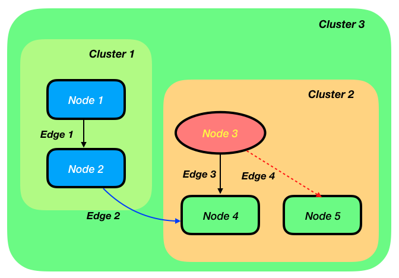
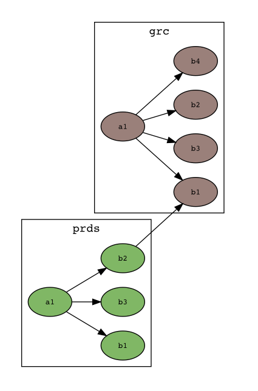
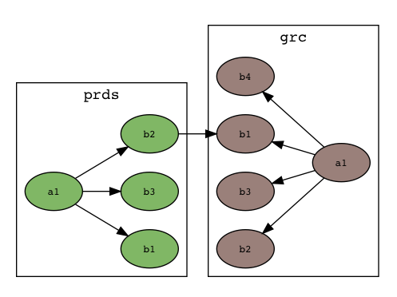

1. Introduction
draw-graph allows you to produce graph/ network diagrams from simple data descriptions.
Network diagrams show how things connect - i.e. boxes and
arrows diagrams.

Mostly you’d use a vector drawing tool like Visio or Powerpoint to produce these types of diagram. Those types of tools are fine choices for a lot of network diagramming needs. draw-graph separates the data that describes the graph from the visualisation step and that gives you a lot of additional power in certain situations:
-
When your diagram is going to be complex and laying it out is going to be or is becomming time consuming.
-
Your diagram is likely to evolve over time. Changing the data and regenerating the visualisation of the data is often quicker and having to edit the whole diagram.
-
You have a series of diagrams to produce from related data. It could be easier to keep your data together and produce different cuts of it for visualisation.
-
You wish to work with a visualisation dynamically, showing what it looks like when grouped a certain way or filtered just so. The draw-graph front end provides lots of options from changing your visualisation dynamically.
draw-graph is powered by Graphviz, a very capable (and complex!) library for displaying graph/ network diagrams. Unfortunately for the non-technical user, the input format for Graphviz, the dot language, can be rather complex. Although it can be written by hand, for large graphs, it’s often preferable to produce the dot format programmatically.
draw-graph solves this problem by using a csv (comma separated values) input format that you would typically prepare in a spreadsheet before uploading or pasting into draw-graph. draw-graph then gives you access to some of the key Graphviz settings for controlling the display in a simple way.
In addition to the core Graphviz functionality, draw-graph goes beyond by introducing both preprocessing and postprocessing stages.
Preprocessing allows for facilities like filtering the graph or finding
paths through it. It also takes alot of acquired knowledge about how to get Graphviz to produce a diagram that looks just so and systemises it so that you as the user don’t have to bother about it too much.
Postprocessing tweaks the appearance of the image returned by Graphviz to improve it and make it closer to the sort of diagram that you might have produced by hand.
1.1. graph terminology
Graphs are a key data structure used in computer science, and come with their own fairly straightforward terminology:
nodes are nodes in your graph - the boxes on your diagram. In graph terminology, these are often called vertices.
A node might participate in none, one or many..
edges are connections between two nodes in a graph - the arrows on your diagram. Edges can be individually styled within the data you load into draw-graph.
clusters are sections within the graph, best thought of as a group of nodes. In draw-graph and Graphviz, clusters may be nested.
2. The GUI
The draw graph gui has been kept simple and is hopefully fairly intuitive, but here’s a brief guide.
2.1. The Examples drop down
There’s a range of examples to look through. Each one sets up both data in the data input area and the options below that.
The examples are worth looking though to see the range of what draw-graph can do.
2.2. Data input
The large text area is for input of the data description of the graph. There are two ways to input data:
-
The Load csv button is used to select a csv file that you have locally whose contents you would like to load.
-
You can type or paste the data directly into the data input area.
In draw-graph the data formats (csv and json, both described in this guide) contain a mix of metadata about your graph (i.e. the nodes and edges) along with information for their visual styling.
|
Note
|
Styling information is highlighted in a different colour from the graph metadata (in the csv format). |
2.3. Local or Remote processing
Next to the draw-graph banner, you’ll see the word `local'. Click on it and it will be toggle to `remote'. Local means that all processing is peformed locally in the browser. In remote mode, data is sent to an Amazon AWS server for processing using https encryption. Local mode is more suitable for if for example your company’s policy forbids sending out of data.
2.4. The draw-graph button
Press this to generate the graph from your data.
2.5. The Save image button
Press this to save your file as an .svg file.
2.6. The Graph display area
The visualised graph will be displayed here. It is zoomable and panable using the standard mouse/ touch controls.
If there was some kind of problem, this error is also where the error message will be displayed instead of the graph.
3. Input formats
Please use the `Examples' drop down on the main page to see what is achievable with draw-graph and see how the data specification of the graph is used to do that.
3.1. Defining Nodes, Edges and Clusters with data
3.1.1. Node metadata
A node in draw-graph is a 'map' - an arbitrary series of keys and their values.
city=Jackson population=43,800 latitude=41N
is an example map with three keys and their associated values.
By having a flexible map as the data structure for describing nodes, draw-graph allows us to embed a lot of different aspects in the data and then choose how to visualise that later.
|
Note
|
Every node in draw-graph must contain the same keys. |
Sometimes, a particular key is not really relevant for a particular node, but draw-graph insists that you treat the nodes as if it has that key - the value can be left blank.
3.1.2. Node styling information
Node styling information is also an optional map of keys and values. In this case, draw-graph directly uses the Graphviz attributes for styling nodes.
For example, specifying:
bgcolor:red
would set the background colour of the node to red.
Please have a look through the examples drop down to see how styles work.
The definitive guide though is on this Graphviz page.
3.1.3. Edge Metadata
An edge in draw-graph is somewhat more loosely defined that a node. In fact it needn’t be defined separately at all. It’s optional. Just specifying that this node connects to that node implies an edge.
However, it’s also possible to decorate that edge with metadata about it. The metadata again takes the form of a map: keys and values.
|
Note
|
Unlike node metadata, there’s no necessity for all edges to have the same keys. |
3.1.4. Edge Styling information
Edge styling information is an optional map of keys and values.
Just as with node styling information, draw-graph directly use the Graphviz attributes for styling edges.
Please see the draw-graph examples and the Graphviz guide for node and edge attributes.
3.1.5. Clusters
Clusters are best thought of as a grouping of the metadata of the nodes in your graph. For example, if all the nodes have a key for 'city' that setting the option cluster by to 'city' will group the graph by city.
Clusters can be used in different contexts in the data you specify draw-graph.
Firstly, they can be styled using the same Graphviz styling attributes as previously described for nodes and edges. This is like thinking of a cluster as a 'box' around a group of nodes and specifying the styling attributes for that box.
As well as styling clusters, you can specify how they relate to each
other to control the layout of the graph, whilst letting Graphviz get on with what its good at; the complex business of laying out nodes and
edges. We’ll get into how a little bit further down in the 'CSV format'
section. Cluster relationships are useful in (and limited to) the dot layout - more below.
3.2. CSV format
In the data that you make describing the diagram you want, the keys are specified just once in the header row, and the values are specified for each node.
Nodes can be individually styled within the data you load into draw-graph.
As previously mentioned, nodes in draw-graph are each specified as a map of key value pairs, but to avoid you having to write down the keys over and over, keys are only specified once, in the header row. This works because, in draw-graph, every node in a graph must have exactly the same keys (again, individual values can be left blank).
3.2.1. Working up the data
The draw-graph web does provide a small text area for working with the data but an easier way to work up the data is in a spreadsheet. For example:

The data was typed in the columns to the left and then in the column marked as blue, a spreadsheet formula concatenates the contents of the previous columns together. When it was ready, the contents of that column were copied and paste into the draw-graph text area.
3.2.2. Special characters, including line breaks
draw-graph uses 3 special characters in its input format. Avoid these in the data that you supply. They are | : and ,
commas , can be escaped in node meta data and edge meta data by
putting a backslash in front of the character. For example:
...:shar\,har:...
At the moment, the other two special characters | and : cannot
be escaped at this time.
Sometimes, you may have a node for which the label you want to use is
much longer than its peers. In this case, it’s useful to break it over
two or more lines. This can be achieved by putting a \n line break
character in the node or edge meta data. For example:
...:This is a very\nlong label:...
With both escaped characters and line breaks, please remember to use this consistently across the node when it appears across all the edges that it participates in. For example if a node is defined as
...:shar\,har:...
in one node, and
...:sharhar:...
in another, draw-graph will assume that they are two different nodes.
In the header row (below), avoid the character / in the specified
keys as this has a special meaning. See 'fallback labels' below.
|
Warning
|
The special characters | and : cannot currently be escaped and should be avoided in your data altogether.
|
3.2.3. The header row
The header row is a list of the keys in each node, separated by the
colon character. It must always be started with h, For example:
h,class:name:id
is a valid header row where the subsequent definition of each row should
be a colon separated list of the values for class, name and
id. The only character not allowed within each key itself is a
comma.
The header row should always come first in the csv file you upload or data you type in to draw-graph’s text entry box.
3.2.4. Edges rows
Edge rows are used the specify the data that makes up the graph. Think of it as one node’s connection to another.
The overall format of an edge row is:
e,<first node>|<first node styles>,<second node>|<second nodes styles>,<edge meta>|<edge styles>
Any/all of the following parts may be omitted:
|<first node styles> |<second nodes styles> ,<edge meta> ,|<edge styles>
An edge row should always be started with e, to tell draw-graph what
type of row it is.
Specifying nodes
Since the keys in each nodes have already been specified in the header row, only the values now need to be specified.
For example (assuming the header row above):
e,Bluebird-class:Simon:1434,Yellow-class:Anita:20345
is a valid simple edge where the nodes are:
class=Bluebird-class:name=Simon:id=1434
and
class=Yellow-class:name=Anita:id=20345
When written out in key=value format.
As in the header row, a colon is used to separate the different values in the node.
You can also pack additional styling information into an edge row, both to style one or both of the nodes and the edge itself (i.e. the connector between nodes).
Styling nodes
Styling information for the nodes can be embedded in the node itself
using the | character.
For example in the edge that we used previously:
Bluebird-class:Simon:1434,Yellow-class:Anita:20345
adding
Bluebird-class:Simon:1434|shape:septagon:fillcolor:blue:,Yellow-class:Anita:20345
will style the Simon node according to those Graphviz attributes specified. Please see the links just above for a description of all available attributes and colours.
One node in your graph might occur many times in the data you load, as that node participates in multiple edges. Styling it once is sufficient in the data. If you style the same nodes appearing in different edges differently, then styles are merged with the repeated styling attributes in the last node winning over the previous.
Styles set on a node will win out over global defaults specified by
draw-graph’s options. For example, if you specify shape:rect on a
node, but ellipse in the node shape' option, then `+rect+ will win
out for that node.
There’s a complete description of all attributes here and the various colours (also from Graphviz) are specified here, although it’s also fine to specify a color in hex format e.g. #4286f4 (please google for `color picker').
Please see the same Graphviz page as linked above for a comprehensive list of all the available attributes.
Edge meta data
Edge meta data is specified as a chain of key value pairs and can be anything you want, bearing in mind the limitations from the special characters section. It’s form is:
key1:value1:key2:value2:key3... etc
Edge meta data is useful for display as labels on your edges. There’s an
option described below called edge labels' where you can specify one of
the keys to be used across all edge labels. It’s also useful for
filtering down to a particular set of edges e.g. +volume>100+` using
the `filter graph' option described below. It’s generally useful to have
a standard set of edge meta data keys across all edges so that labels
and filtering can be consistently applied. The example called `Complex
architecture diagram' is a good example use of edge meta data.
Styling edges
Optionally an edge row can have an additional comma after the data of
the two nodes have been specified followed by a | character and then
a list of keys and values that are used to specify how that particular
edge is to be displayed. For example:
Bluebird-class:Simon:1434,Yellow-class:Anita:20345,|color:deeppink:thickness:2
The edge attributes used to specify display of the edges are actually Graphviz attributes.
Useful common ones include label (a text label for the edge),
style (e.g. set to dashed or don’t set for an undashed line, or
set to invis for no line at all), penwidth (the thickness of the
edge, for example, try a value of 5 for a thick line). If you specify
any attributes here that can also be set globally by a draw-graph
option, for example the label, the per-edge setting specified the data
will win out over the default specified in the options.
3.2.5. Node rows
Nodes rows are entirely optional in draw-graph but are a convenience that allow you to specify edge rows (see below) a bit more concisely.
The overall format of a node row is:
n,<node synonym>,<node/ node meta data>|<node styles>
The |<node styles> part is optional.
A node row should always be started with n, to tell draw-graph what
type of row it is.
Node Synonyms
The node synonym is a short name for the node that is useful in specifying edges more concisely and readably. For example, given two node rows of
n,node_max,pandas:max n,node_sim,pandas:simone|fillcolor:blue
you can specify an edge as
e,node_max,node_sim
instead of
e,pandas:max,pandas:simone|fillcolor:blue
A node synonym must always start with `node' followed by any sequence of alphanumeric and underscore characters. Any of the following is a valid node synonym:
node_1 node1 node_A1 node_a_thing_that_bit_me_2
3.2.6. Cluster Style rows
Cluster Style rows are not used to specify if/ how nodes should be put
into clusters in the graph, but they are used just for styling the
clusters. A cluster style row is always started with a cs,.
A cluster style row has the form:
cs,Yellow-class|bgcolor:cornsilk1:style:rounded
It always has to start with cs to indicate the type of row. Before
the | you put the value of the cluster that you are styling, and
after, a colon separated list of Graphviz key value pairs. Please see
the same links as before.
If you click through the Examples on the main page, you’ll see how various effects can be achieved. There’s a section on more advanced layout tricks, where you need to understand more about Graphviz, further down on this page.
For a comprehensive list of all Graphviz attributes that can be applied to nodes, edges and clusters, here’s the link again.
3.2.7. Cluster Edge rows and Cluster to parent rows
The final two types of rows are really only useful when the dot
layout is selected in the options. Graphviz’ dot layout is probably the
most useful, and with it we can get the closest to using Graphviz and
draw-graph are a diagramming tool. The key concept to understand with
dot is rank.
Please go back to the main page and select the Friendship graph
example and hit the 'draw-graph' button. In that graph (which is laid
out by 'dot'), The node Cristolene has an edge that points to
Shahar. Graphviz infers that Sharhar has a lower rank than
Cristolene, and so is laid out below it. I put below in quotes
because you can lay out the graph top to bottom, left to right etc using
the rankdir option. In the same graph, see how there’s an edge from
kacey in the pandas cluster to cosmo in the brownbears cluster? That causes cosmo to have a lower rank than kacey and so the brownbears cluster starts lower down than the pandas one. But what if you wanted to brownbears to be below pandas?
Add this definition line somewhere in the data lines and press 'draw-graph' again.
e,pandas:Bridget,brownbears:cosmo
We chose Bridget because that node in the lowest ranked in pandas.
draw-graph automates this for you. Rather than specifying relationships
between nodes to control cluster layout, you can specify cluster edge
rows directly. cluster edge rows always start with a ce,
Delete the line you just added, and replace it with this one.
ce,pandas:brownbears
and hit draw-graph again. brownbears is placed below pandas and the
edges that draw-graph creates to control that are styled as invisible,
so they don’t appear in the display. Actually, they’re stripped out of
the svg by Graphviz while its creating it, so are not even present if
you decide to edit the svg in an editor program later. You can specify
multiple cluster edges on a single ce, line so
ce,pandas:brownbears:pandas:squirrels
will bring the squirrels cluster below pandas also. It’s also fine to
specify ce, relationships on multiple lines, which, for clarify, is
preferable.
A note on the implementation of cluster edges. The Graphviz layout
engine has no concept of the relative position of clusters. Rather they
are just boxes draw around the nodes they contain. In order to introduce
relative positoning, draw-line creates a lot of invisible edges between
nodesin the two clusters you specify an edge between in the graph just
before it is rendered. These edges have constraint:true set -
i.e. they participate in and influence the rank. If you ever want to
see these edges, there’s an option called show invisible constraints.
Cluster edges only work in one direction. For example if you dot
layout graph has a rankdir' (another option) set to `TB, i.e. Top to
Bottom, then cluster edges can be used to say that one cluster is
'below' another.. but there’s no 'to the left of' instruction available
at the same time.
draw-graph offers the option to control the number of inter-node edges used to implement each cluster edge. Low numbers might not be enough to push your clusters into the desired relative positions given all the other edges that you’ve specified in the graph that could also be influencing rank. Higher numbers lock the relative position of clusters very effectively but can cause Graphviz to produce a wide graph (which can be countered by setting the `concentrate' option to true).
Generally you want the lowest number of cluster edges that produce the desired cluster positioning.
Cluster→parent rows are a bit different. They’re for nesting
clusters. Cluster→parent rows are started with a cp,. Remove all
the ce, lines you added above and instead, add this line to the
data:
cp,squirrels:pandas
which is used to denote that pandas is the parent cluster of squirrels. Hit `draw-graph' again and you’ll see the squirrels cluster moved inside the 'pandas' cluster at the position determined by the relative rank of the node within it to the other nodes inside pandas.
Now let’s add a virtual node. Keeping the line above in place, add another new line to the data:
cp,pandas:are they bears
The new cluster you just added, are they bears, is not styled yet,
so add another line, a cluster style line like so:
cs,are they bears|bgcolor:lightgray
Another example in the drop down list - Friendship cluster layout - shows a more complicated example of what can be achieved with cluster edge rows and cluster→parent rows. draw-graph adds these in order to get the most out of Graphviz’ dot layout and help you produce `what connects to what' style diagrams which are pretty common in the work place.
3.2.8. Commenting out lines
Use a semi-colon `;' or a double semi-colon `;;' at the beginning or any line in the input data, apart from the header line which must always be present, to have draw-graph ignore the line. This is often useful while you’re working.
3.3. JSON format
draw-graph also supports json as an input format and there are a couple of examples in the drop down. For fuller details of the format please see the github page of the command line tool version of draw-graph.
3.4. Options
We’ve already covered how the styling of nodes, edges and clusters is embedded in the data definition itself. Options is for globally controlling either styling aspects for the whole graph, or for performing operations (e.g. filtering) on the whole graph.
Draw-graph splits the options into two sections, those provided by draw-graph itself and those which are pass throughs into Graphviz settings.
3.4.1. draw-graph options
node label is the key from your data to be used as the label on each
node.
Fallback labels & Composite labels
Sometimes in one of your nodes, one of the values might be missing and it’s valid that it’s missing e.g.
Bluebird-class::1434
In this case, you can specify node-label with a fallback key to use,
or multiple fallback keys for that matter. e.g. rather than just
name, specify as name/id or even name/id/class
Composite labels are a way of putting more information into each of the
labels on your nodes. For example setting the node label' option to
`+name&id+ would put the values for both those keys onto each node.
cluster on clusters the graph on one of the keys from your data. For
example, setting cluster-on `class' will group the graph by `class'.
color on controls how the color for a node is chosen. By default,
draw-graph will generate a light random color for each node based on the
setting for cluster-on unless you set color-on differently. Any
node color specified directly in the input data will override this.
node-tooltips In the output image, node tooltips will appear when
hovering over each node. node-tooltips should be specified as one or
more of the keys in the input data. For example:
name
or
name/animal
node-url if one of the key - value pairs on your node data is a url.
then that key can be selected here and in the output image, clicking on
that node, will take you to the url (in a new browser tab page).
filter-graph allows you to specify filtering terms which are applied
in the preprocessing stage. For example, pick the Architecture diagram'
example and press draw-graph. In the example, the keys for the nodes and
`+view+, function and application. Set filter-graph to:
function = Capture
and press draw-graph again.
Now set filter-graph to:
function = Capture or function = Lifecycle
and hit draw-graph again. A filter-graph `expression' is made up of a series of `terms'. At present, logical `or' is provided for joining the terms into an expression. logical `and' may well be provided in futures. An expression where several terms are over the same key as above can be written more concisely as:
function in (Capture, Lifecycle)
Asides from the equality operator (written as = or :),
inequality operators (<, <=, > and >=) are also
available. These will only be applied to numreic values.
A filter expression needn’t have each term over the same key.
function = Capture or application = hePikes
is valid and will pull in the application called `hePikes' as well as all applications in the Caputre function in the Complex Architecture digram example.
Each term in the filter expression is applied to every node and every edge is the graph, but when a node or edge does not contain the specified key with it, it automatically passes that particular term.
For example, say every node in your graph had the keys:
view:function:application:id:level
and every edge the keys:
volume:format:level
A filter term based on `function' say would end up only being applied to nodes. A term based on `volume' only to edges, but a term based on `level' would be applied to both nodes and edges. You could use this to, for example, nest different levels of detail within a single graph description and effectively zoom in and out, as you zoomed out seeing summary level nodes and edges for example.
The functionality to take a sql-like statement is supplied by the library clj-sql-pred. Please have a look there to understand the full syntax of the sql-like command language for filtering.
paths is a slightly more complex way of effectively filtering the
graph. Pick the `Architecture diagram' again and enter:
function in (Capture, Lifecycle) | function = Reporting
paths is made up of two filter expressions separated with the pipe
character |'. The graph is filtered both for the first filter
expression and the second. Each filter expression is this time run only
over the nodes of the graph. Then a pathfinding algorithm is run between
all combinations of the first set of nodes and the second. Any other
nodes found on any of those paths (as well as the start and end nodes
captured by the filter terms) are shown in the resulting graph.
`+paths+ is useful for answering questions about how certain domains
connect and what do those connections pass through.
elide lower levels will hide the lowest levels (the `leaf' nodes) in
the graph.
highlight roots? :true/false - will highlight root nodes in the
graph as stars symbols. Root nodes are nodes which don’t have any edges
going into them.
post process set this true to have draw-graph postprocess the
output image with the controls.
Simulated annealing is an algorithm that is used to find an optimal solution for a system, given constraints. In this case the system is a series of boxes (clusters) and they are subject to small random moves. Overall the system is trying to find the solution where the boxes cover the greatest possible area, given the constraints that no box can overlap another, or it’s boundary or any obstacles in the system (which are represented by the darker boxes).
Postprocessing is mainly for the Graphviz `dot' layout.
anneal expand clusters controls the directions in which annealing
can expand clusters.
anneal bias In order to get a good result, in a `dot' TB layout (the
graph is laid out Top to Bottom) left and right random moves are on
average n times bigger than up down, where n is the number than you set
in the box. `3' seems to work well.
anneal cluster separation is the gap in pixels which should be
preserved between clusters during annealing. If this field is unset,
then draw-graph picks up the gaps left by Graphviz and uses those.
font. Type the name of a font that you want uses for all text in the
image. `sans-serif' and `serif' are good choices as they are not tied to
the particular machine you’re working on and will look roughly the same
to everyone.
number cluster edges As described above, this is the number of edges
between nodes in two clusters that are generated to force Graphviz to
position clusters relative to each other.
3.4.2. Graphviz options
In this section of the options panel, draw-graph exposes a select few important Graphviz options.
layout
This is a Graphviz setting that determines how the graph gets laid out. possible settings are `dot' `fdp' `neato' `circo' `twopi'. Please note, that of these, several layouts do not support clustering. It’s worth experimenting with the layout options as these make dramatic differences to the look of the graph. More information is available here. (under `Roadmap'). Also, please click through the Examples and note the settings that are used for each. The dot layout is the default and will get you closer to the look and feel of a hand drawn diagram that other layouts which tend to be more specialist.
Please note that for large graphs - more than a hundred edges - the `dot' layout will be much faster than the other two.
rankdir is a Graphviz setting that only applies to the dot layout.
It controls whether the graph is laid out left to right, top to bottom,
etc.
node shape is a Graphviz setting which controls the style of node
shape
node fixedsize controls whether all nodes are the same size or
adapted to their text content.
splines is a Graphviz setting which controls the style of edges.
nodesep is a Graphviz setting which specifies the gap (in inches)
between nodes in the same rank.
ranksep is a Graphviz setting which specifies the gap (in inches)
between different ranks in the graph. See ’Two facing trees’ in the
Graphviz layout tricks section below.
concentrate draws edges that have a common end point closer
together. Useful in large graphs.
overlap is a Graphviz setting which controls whether/ how nodes are
allowed to overlap.
scale is a Graphviz setting which scales the graph after layout.
edges constaints is a key control, especially in dot layouts. When
set to false the edges in your graphs don’t contributes to the ranking
algorithm (that ranks nodes top to bottom/ left to right etc) according
to how they point to each other. There’s an example on rank below.
For more information on any of the Graphviz settings, please see here
4. Saving the graph image
You can save you image as an .svg file into the downloads folder that your browser uses.
4.1. Layout tricks
Here are some tips on how to solve certain graph layout challenges.
4.2. 1. Two facing trees
The importance of rank in `dot' layouts.
Sometimes you might want to show how the nodes in two tree-like clusters relate to each other, but can face a problem that both trees face the same way, when you would rather have them facing each other. Here’s an example of the problem: 
The trick to fixing this problem is to understand Graphviz’s concept of rank (in the dot layout). In the image, prds:b2 points to grc:b1. That’s why the whole grc cluster is shifted to the right of prds. We can fix this and get the grc cluster over to the right and facing back towards prds by reversing the direction of all the edges just inside the grc cluster/tree. We’ll also need to get the arrows inside the grc cluster to point the other way.
So for example the edge:
grc:a1,grc:b1
Needs to become
grc:b1,grc:a1,dir:back
If you do that for each of the internal edges of grc, the resulting image will look like so: 
Finally, for larger trees when many connections between them, you might
want to separate the two trees more. This can be accomplished by adding
on an attribute to the edges between the two trees minlen:5 - or
any number for the `minimum length' that you want.
Please see the `two facing trees' example and its data for how this accomplished for two larger trees that need to face each other.
In different types of pictures using the dot layout, fine tuning the
layout can usually be accomplished by playing around with the relative
rank of nodes by for example turning edge constraints in the options
to false and introducing invisible edges' with `+constraint:true+ in
their attributes. Draw-graph itself makes extensive use of invisible
edges*, such that it is recommended not to use them yourself (i.e. don’t
add style:invis to your edges). Instead, make the edges fully
transparent in color. See for example the Complex cluster layout'
example which has an edge with the color set as so: `+color:#c731ed00+.
Adding 00 on the end of any hex color code is the recommended way to
make constraint:true edges invisible.
*For expressing the layout of cluster edges.